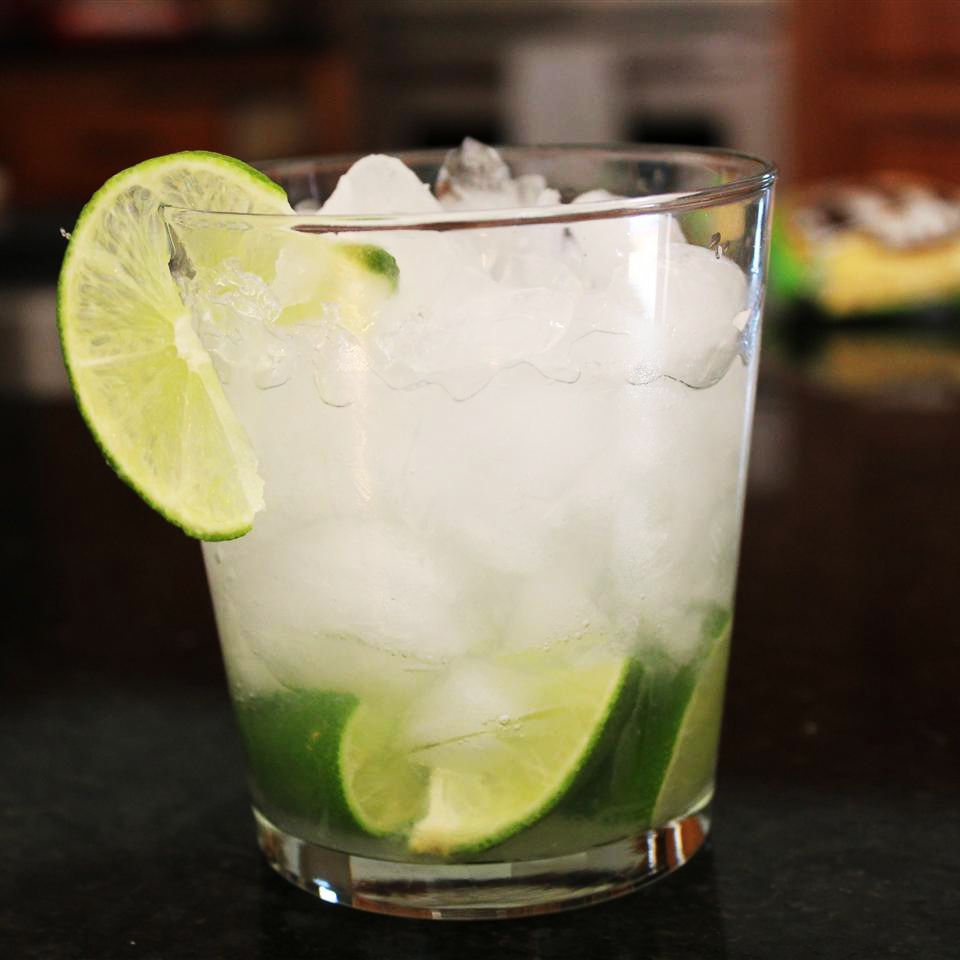

Caipirinha

Description
Caipirinha is a Brazilian cocktail made with lemon and "cachaça", a typical spirit in that country.
Recipe retrieved from https://www.allrecipes.com/recipe/20210/caipirinha/ .
Ingredients
- ½ lime, quartered;
- 1 teaspoon white sugar;
- 2 ½ fluid ounces cachaça (Brazilian rum);
- 1 cup ice cubes.
Directions
- Squeeze and drop lime wedges into a large rocks glass. Add sugar and muddle until juices release;
- Pour in cachaça and ice. Stir well.